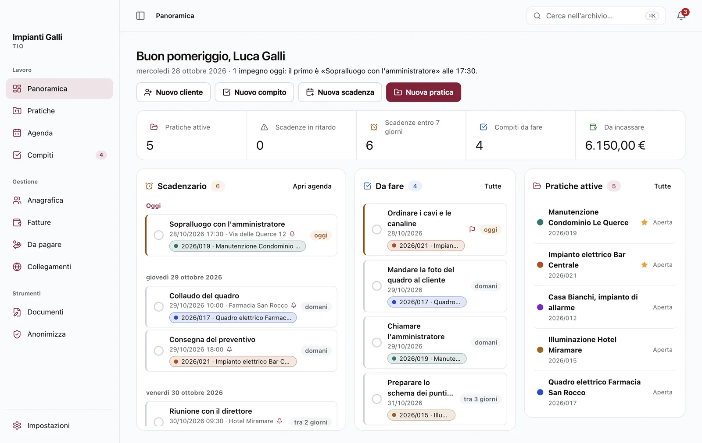
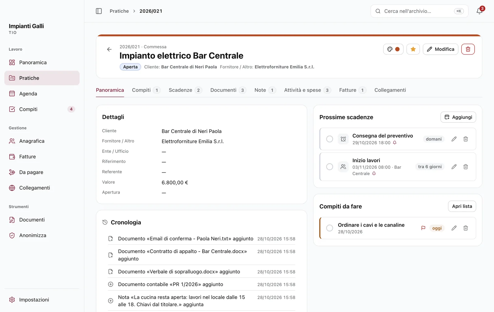
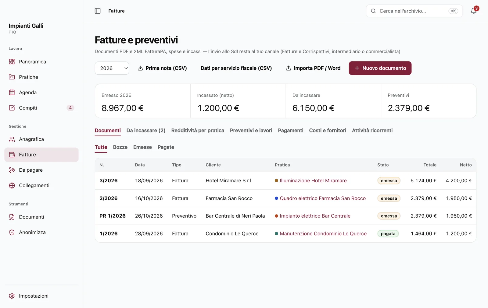

Tutto il lavoro in una schermata.
Appena apri TIO vedi gli impegni di oggi, le cose da fare, i lavori in corso e quanto resta da incassare. Un clic su una riga e sei dentro il lavoro giusto.

Il tuo lavoro, sul tuo computer.
Il gestionale gratuito e open source per studi legali, liberi professionisti e ditte individuali: clienti, lavori, scadenze, preventivi e fatture. Senza account e senza abbonamento.
Per macOS 13 o successivo e Windows 10/11 a 64 bit.
Trascina per confrontare. Lo stesso studio: prima sparso tra cartelle, fogli, posta e promemoria, poi tutto in TIO.
Quello che fai ogni giorno, in una sola app.
Appena apri TIO vedi gli impegni di oggi, le cose da fare, i lavori in corso e quanto resta da incassare. Un clic su una riga e sei dentro il lavoro giusto.

Cliente, scadenze, compiti, note, documenti, ore e fatture dello stesso lavoro stanno insieme. La cronologia ricorda cosa è successo e quando.

Appuntamenti e scadenze per mese, settimana o elenco, con uno o più avvisi prima, anche a finestra chiusa. Google Calendar, Outlook e iCloud compaiono accanto.

Con la tua intestazione, IVA e bollo già calcolati. TIO tiene il conto di cosa è incassato e di cosa manca, e a fine anno prepara la prima nota per il commercialista.

Premi ⌘K sul Mac o Ctrl+K su Windows e scrivi: clienti, lavori, scadenze, compiti, note e documenti. Dentro PDF e scansioni cerchi dalla scheda del lavoro.

TIO salva da solo una copia dei tuoi dati e tiene le ultime sette, anche su un disco esterno e protette da una password.

Per studi legali, liberi professionisti e ditte individuali: al primo avvio scegli la tua attività e TIO usa le tue parole.
Ogni incarico con i suoi documenti, le scadenze e le ore; preventivi, documenti PDF e incassi con le aliquote e il contributo della tua cassa.
Commesse, forniture, manutenzioni e consulenze, ognuna con i suoi documenti; fatture in PDF e XML FatturaPA con IVA e bollo.
Numero di ruolo, autorità e giudice in ogni pratica; udienze con avvisi e parcelle con i parametri forensi.
Restano sul tuo computer: nessun server, nessun account, nessuna statistica d’uso.
L’archivio è un database sul tuo computer. TIO lo copia da solo ogni giorno e non lo invia a nessuno.
L’archivio non è cifrato: proteggi il computer con FileVault o BitLocker e tieni il backup con password.
Documenti e Anonimizza: scrivere e condividere senza uscire da TIO, sempre sul tuo computer.
Si ringrazia Simone Rizzo per l’ispirazione.
Alla prima apertura trovi già lettere, preventivi, conferme d’ordine, solleciti, verbali, relazioni e l’informativa privacy, scritti per il tuo profilo e con la tua intestazione.

Scegli il lavoro e il modello: cliente, indirizzo, numero e oggetto si inseriscono da soli. TIO chiede solo i campi che mancano, come l’importo.

Hai già un modello in Word? Importalo: scrivi i campi tra doppie graffe, come {{destinatario.nome}}, e TIO li riempie lasciando identici stili, immagini, intestazione e piè di pagina.

Incolla un testo o apri un PDF, un Word o una scansione: TIO trova nomi, società, codici fiscali, partite IVA, IBAN, indirizzi, telefoni ed email e li sostituisce con segnaposto come [FULLNAME_1].

Dalla scheda del lavoro, «Anonimizza…» prepara una copia anonima di tutti i suoi documenti in una cartella a parte. Gli originali non cambiano.

Usi un’intelligenza artificiale per una bozza o un riassunto? Le mandi il testo anonimizzato, poi incolli qui la risposta: TIO rimette nomi, numeri e indirizzi veri.
Si ringrazia Simone Rizzo per l’ispirazione.

Con il tema «Automatico» TIO segue il computer: quando il PC passa al tema scuro al tramonto, TIO lo fa con lui. Puoi anche sceglierlo tu, in Impostazioni › Aspetto e comportamento.
Tre passi, una volta sola: poi TIO ti avvisa da solo.
Gratis, in italiano, senza permessi da amministratore.
Sul Mac, menu Apple › Informazioni su questo Mac: «Chip Apple M…» indica Apple Silicon; «Processore Intel» indica Intel.
I file per Mac con chip Apple o Intel e Windows 10 e 11 a 64 bit sono su GitHub, con i codici SHA-256 per verificarli. L'app installata occupa circa 420 MB su Mac o 510 MB su Windows, oltre ai tuoi dati.
Apri il file .dmg scaricato. Serve macOS 13 Ventura o successivo.
TIO non passa dall'App Store: la prima volta lo consenti da Impostazioni di Sistema › Privacy e sicurezza.
Scegli la tua attività, scrivi il nome e inizia. A finestra chiusa TIO resta nella barra dei menu.
Se il browser chiede, scegli di conservare il file. Windows 10 e 11 a 64 bit.
SmartScreen avvisa perché manca una firma a pagamento. L'installazione è in italiano e senza permessi da amministratore.
Scegli la tua attività, scrivi il nome e inizia. A finestra chiusa TIO resta vicino all'orologio.
Le risposte brevi a quello che chiede chi prova TIO per la prima volta.
Costi, internet, fattura elettronica, dati e aggiornamenti. Per tutto il resto c’è la guida completa, la stessa che trovi nell’app.
Sì. Nessun abbonamento, nessuna versione a pagamento, nessuna pubblicità. Il codice è pubblico con licenza MIT: chiunque può leggerlo e verificarlo.
Sì. Al primo avvio scegli «Ditta individuale / libero professionista»: le parcelle diventano fatture e preventivi con IVA e bollo, i lavori diventano commesse, forniture, consulenze e manutenzioni, le controparti diventano fornitori. Puoi cambiare tutto da Impostazioni.
No. TIO funziona anche senza connessione: internet serve solo per scaricarlo, per leggere un calendario collegato e per il controllo facoltativo degli aggiornamenti.
Prepara il file. Da ogni fattura TIO crea l'XML FatturaPA, controllato con le regole dello schema ufficiale, da caricare su Fatture e Corrispettivi o sul servizio del tuo intermediario. L'invio al Sistema di Interscambio, le ricevute e la conservazione restano a quel canale o al commercialista.
Sì. Imposti l'IVA a zero in Impostazioni: TIO non la calcola e aggiunge il bollo da 2 € quando l'importo supera 77,47 €. Lì si cambiano anche cassa previdenziale e ritenuta.
La prima nota dell'anno, un file CSV che si apre con Excel con tutti i documenti emessi, e i PDF di fatture e preventivi.
Sì. Chiudendo la finestra TIO resta acceso nella barra dei menu del Mac o vicino all'orologio di Windows e avvisa da 15 minuti a due settimane prima. Per chiuderlo davvero scegli Esci.
No. TIO è pensato per una persona su un computer e non sincronizza i dati tra dispositivi. Puoi però esportare l'agenda in un file .ics e aprirla nel calendario del telefono: è una copia, non si aggiorna da sola.
Sì: i compensi con i parametri del DM 55/2014 aggiornati dal DM 147/2022, i termini processuali in avanti e a ritroso con sospensione feriale e festivi. Sono un aiuto: verificali sempre sul caso concreto.
Se la tua versione di Cube offre un link iCal o un file .ics, TIO può leggerne gli eventi e riconoscere le pratiche presenti nelle udienze e nelle scadenze, con un'anteprima da controllare. Verifica prima l'esportazione disponibile nel tuo account: TIO non accede direttamente all'archivio completo o ai documenti di Cube e non chiede la password di Cliens.
Solo tu. L'archivio sta sul tuo computer; TIO non ha server e non raccoglie statistiche. Escono dati solo se colleghi un calendario o attivi il controllo facoltativo degli aggiornamenti.
Puoi bloccare TIO con una password, all'avvio e dopo un po' di inattività, e cifrare i backup. L'archivio sul disco invece non è cifrato: per questo conviene attivare FileVault sul Mac o BitLocker su Windows.
Ogni giorno TIO fa una copia dell'archivio e tiene le ultime sette. Puoi salvarle su un disco esterno e proteggerle con una password; su un computer nuovo le riapri con «Ripristina da backup…».
Sì. Clienti, lavori, scadenze e fatture si importano da file CSV o Excel, con un'anteprima e senza doppioni. Gli appuntamenti arrivano anche da Google Calendar, Outlook o iCloud con il link del calendario.
Perché TIO non ha una firma a pagamento di Apple o Microsoft. Sulla pagina delle versioni trovi i codici SHA-256: confrontandoli sai che il file è proprio quello pubblicato.
Scarichi la nuova versione e la installi sopra quella che hai: dati e impostazioni restano. Se vuoi, TIO ti avvisa quando ne esce una.
Da TIO scegli Aiuto › Segnala un problema: prepara versione, sistema e il registro degli errori. I percorsi vengono rimossi, ma controllalo e togli eventuali dati riservati prima di condividerlo. Poi apri una segnalazione su GitHub. TIO non invia nulla da solo.
Il codice è aperto e la licenza MIT ti permette di modificarlo. Scaricalo da GitHub e chiedi a un assistente di programmazione, come Claude Code, Codex o un altro, di aggiungere quello che ti serve. Oppure proponi l'idea con una segnalazione su GitHub.